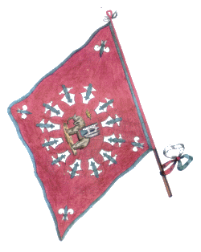

CAPITANI VITTORIOSI:
4 Eustachio Calvani
2 Gioacchino Cenni
1 Assunto Panti
1 Andrea Lenzini
1 Giacomo Soldani
1 Giuseppe Amerighi
1 Giovanni Tognazzi
1 Bartolomeo Niccolini
1 Galgano Rosi
1 Giovanni Vestri
1 Adamo Finisceri
1 Ottavio Bellaccini
1 Giuseppe Calvani
1 Il Seggio
1 Adamo Mattii


- IN GRASSETTO QUANDO VINSE

Giovanni Vestri
Capitano vittorioso del
16 agosto 1843
immagine tratta da
"Delle donne della Torre"